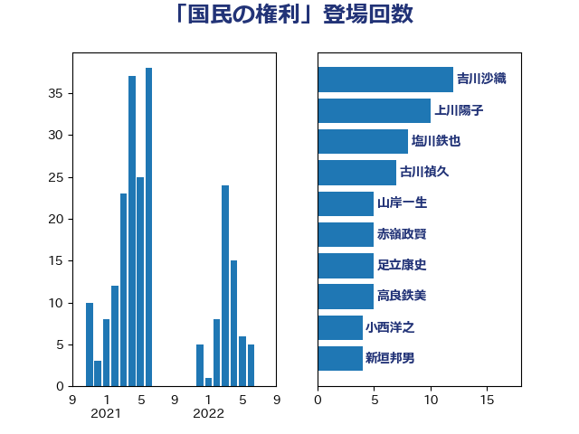

単語「国民の権利」

| 吉川沙織 | 立憲民主党 | 12 回 |
| 上川陽子 | 自由民主党 | 10 回 |
| 塩川鉄也 | 日本共産党 | 8 回 |
| 古川禎久 | 自由民主党 | 7 回 |
| 山岸一生 | 立憲民主党 | 5 回 |
| 赤嶺政賢 | 日本共産党 | 5 回 |
| 足立康史 | 日本維新の会 | 5 回 |
| 高良鉄美 | 無所属 | 5 回 |
| 小西洋之 | 立憲民主党 | 4 回 |
| 新垣邦男 | 立憲民主党 | 4 回 |
| 田村憲久 | 自由民主党 | 4 回 |
| 伊藤岳 | 日本共産党 | 3 回 |
| 倉林明子 | 日本共産党 | 3 回 |
| 吉田統彦 | 立憲民主党 | 3 回 |
| 國重徹 | 公明党 | 3 回 |
| 奥野総一郎 | 立憲民主党 | 3 回 |
| 菅義偉 | 自由民主党 | 3 回 |
| 大串博志 | 立憲民主党 | 2 回 |
| 小池晃 | 日本共産党 | 2 回 |
| 山田賢司 | 自由民主党 | 2 回 |
| 斉藤鉄夫 | 公明党 | 2 回 |
| 新藤義孝 | 自由民主党 | 2 回 |
| 本村伸子 | 日本共産党 | 2 回 |
| 柴田巧 | 日本維新の会 | 2 回 |
| 浜田聡 | NHK党 | 2 回 |
| 西村康稔 | 自由民主党 | 2 回 |
| 逢沢一郎 | 自由民主党 | 2 回 |
| 伊藤孝江 | 公明党 | 1 回 |
| 北側一雄 | 公明党 | 1 回 |
| 吉良よし子 | 日本共産党 | 1 回 |
| 堀井巌 | 自由民主党 | 1 回 |
| 大口善徳 | 公明党 | 1 回 |
| 宮崎政久 | 自由民主党 | 1 回 |
| 小沢雅仁 | 立憲民主党 | 1 回 |
| 山下芳生 | 日本共産党 | 1 回 |
| 山本剛正 | 日本維新の会 | 1 回 |
| 山添拓 | 日本共産党 | 1 回 |
| 山田勝彦 | 立憲民主党 | 1 回 |
| 岩渕友 | 日本共産党 | 1 回 |
| 岸信夫 | 自由民主党 | 1 回 |
| 岸田文雄 | 自由民主党 | 1 回 |
| 川合孝典 | 国民民主党 | 1 回 |
| 平木大作 | 公明党 | 1 回 |
| 志位和夫 | 日本共産党 | 1 回 |
| 打越さく良 | 立憲民主党 | 1 回 |
| 斎藤嘉隆 | 立憲民主党 | 1 回 |
| 末松信介 | 自由民主党 | 1 回 |
| 杉尾秀哉 | 立憲民主党 | 1 回 |
| 枝野幸男 | 立憲民主党 | 1 回 |
| 柚木道義 | 立憲民主党 | 1 回 |
| 森屋宏 | 自由民主党 | 1 回 |
| 櫻井周 | 立憲民主党 | 1 回 |
| 武田良太 | 自由民主党 | 1 回 |
| 池下卓 | 日本維新の会 | 1 回 |
| 津島淳 | 自由民主党 | 1 回 |
| 浅田均 | 日本維新の会 | 1 回 |
| 片山さつき | 自由民主党 | 1 回 |
| 牧山ひろえ | 立憲民主党 | 1 回 |
| 玉木雄一郎 | 国民民主党 | 1 回 |
| 矢倉克夫 | 公明党 | 1 回 |
| 石川大我 | 立憲民主党 | 1 回 |
| 福島みずほ | 社会民主党 | 1 回 |
| 福島伸享 | 無所属 | 1 回 |
| 稲田朋美 | 自由民主党 | 1 回 |
| 茂木敏充 | 自由民主党 | 1 回 |
| 赤池誠章 | 自由民主党 | 1 回 |
| 鈴木庸介 | 立憲民主党 | 1 回 |
| 長浜博行 | 無所属 | 1 回 |
| 階猛 | 立憲民主党 | 1 回 |
| 青山繁晴 | 自由民主党 | 1 回 |